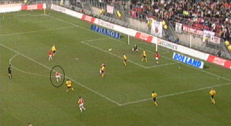
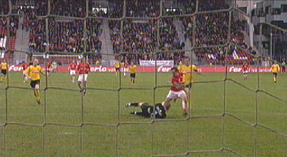

|
FC
Utrecht - Roda JC (2-0) 19 november 2006
|
Een snoeihard schot van Lachambre wordt door doelman Vorm nog maar net met
een hand overgetikt.
Afgekeurde treffer van Fortuné die rand buitenspel staat.
Even later wordt Agustien buitenspel gefloten. Een onjuiste beslissing.

Kruys jaagt met een perfecte volley de bal superstrak in de kruising. Kujovic is
kansloos op deze granaat-inslag: 1-0, (26').
Vlak voor rust wordt het bijna 2-0 maar Kujovic houdt het schot van Van der Gun.

Alweer een goede redding van Kujovic waarbij hij in het gezicht geraakt wordt.
Hij
kan na een korte behandeling weer doorspelen.
Oper die vrij voor de keeper kwam wist de kans niet te benutten.
Kujovic trekt aan de noodrem bij De Caluwé. Scheidsrechter Nijhuis kan niet
anders dan de rode kaart trekken en een strafschop aan FC Utrecht toekennen.
Ex-Rodaspeler Van Dijk neemt de aanloop voor de penalty.
Hij gaat erin, 2-0, (70').
Roda wordt nog enkele malen gevaarlijk na de tweede tegentreffer. Hier schiet
De Jong uit een voorzet van Ramzi op de doelman van Utrecht.
© Koempels Pleasure Dome
|